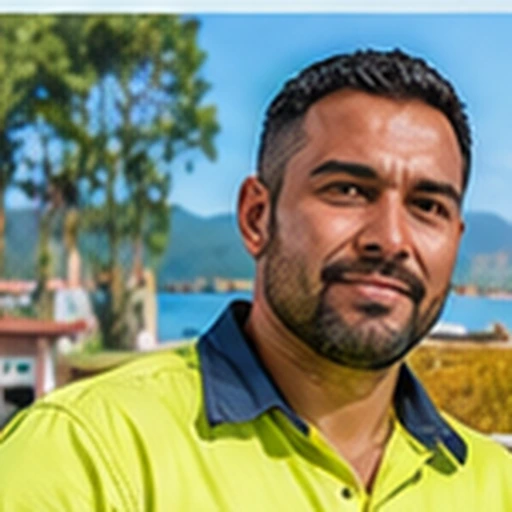
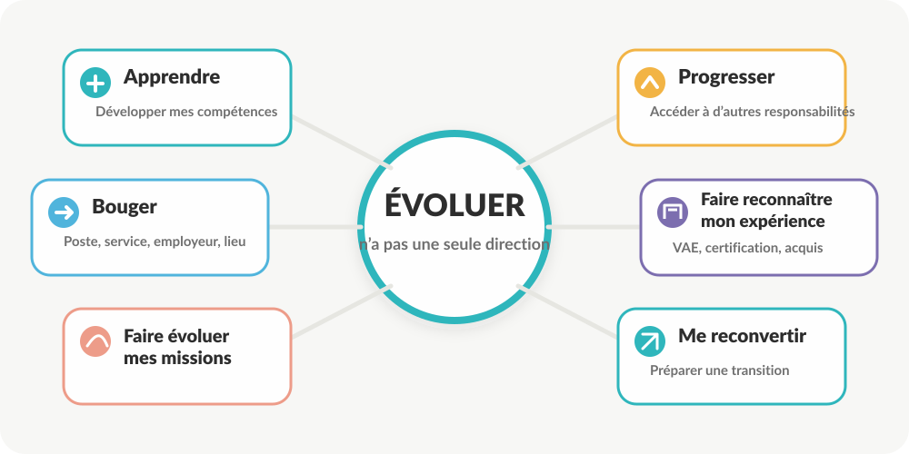
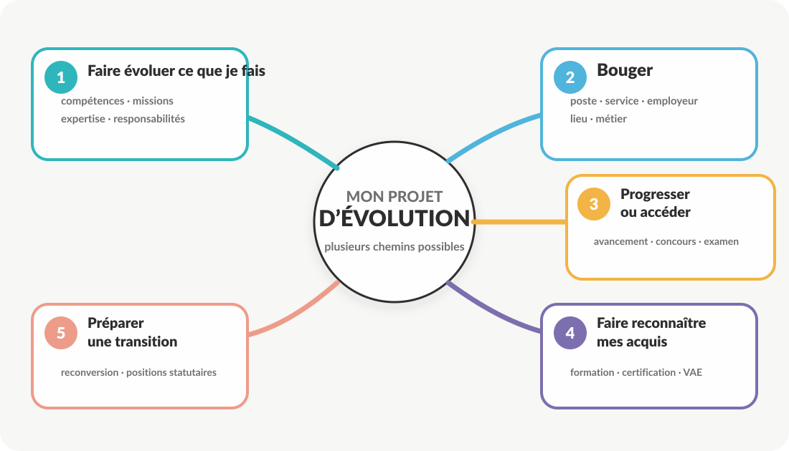
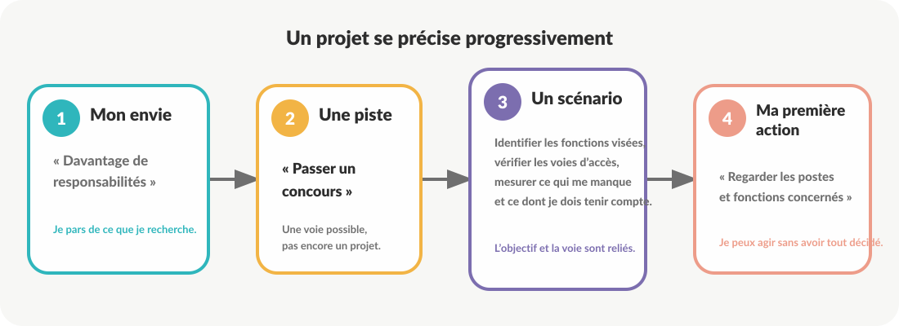
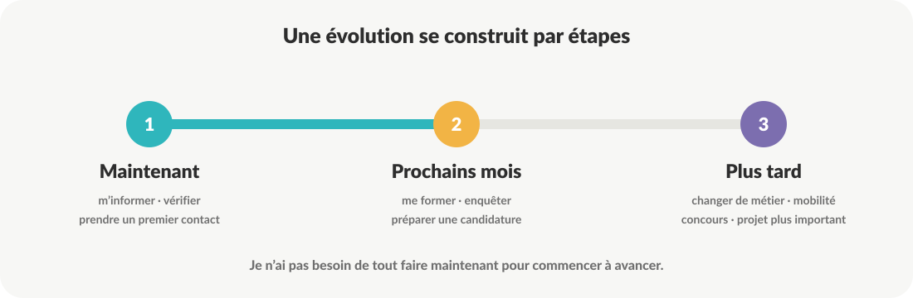

Et si vous commenciez par explorer ?
Faire le point, découvrir les possibilités qui s’offrent à vous et identifier des pistes d’évolution réalistes.
Vous pouvez avoir une idée précise… ou simplement l’envie que quelque chose change. Vous n’avez pas besoin d’avoir déjà un projet pour commencer.

MikaëlAgent technique en établissement public« J’aimerais changer d’environnement professionnel. »Évoluer peut vouloir dire beaucoup de choses
Une évolution professionnelle ne signifie pas nécessairement changer de métier, devenir cadre ou passer un concours.

Qu’est-ce qui vous amène ici aujourd’hui ?
Commencez par ce qui vous ressemble aujourd’hui, puis précisez ce que vous aimeriez voir évoluer.
Qu’aimeriez-vous voir évoluer ?
Choisissez librement les dimensions qui comptent pour vous. Vous pourrez affiner ensuite.
Et si vous regardiez un peu plus loin ?
Ne cherchez pas encore à savoir si votre projet est réalisable. Pour quelques instants, projetez-vous.
Qu’est-ce qui compte le plus pour vous ?
Choisissez jusqu’à trois éléments. Ils serviront de boussole lorsque vous comparerez vos scénarios.
0 priorité sélectionnée sur 3.
Maëva, gestionnaire administrative en commune
Elle souhaite exercer davantage de responsabilités. Sa première idée est : « Il faut que je passe un concours. »
Est-ce nécessairement la première question à se poser ?
Quelle est votre situation aujourd’hui ?
Certaines possibilités d’évolution dépendent de votre situation administrative. Cette information permettra d’adapter les repères présentés ensuite.
Quelques repères sur votre situation
Renseignez seulement ce que vous connaissez. Ces informations servent à donner du contexte à votre carnet, pas à constituer un dossier administratif.
Il existe plusieurs façons d’évoluer
Commencez par regarder l’ensemble du paysage. Vous pourrez ensuite entrer dans chaque famille et ajouter à votre carnet les pistes qui vous intéressent.

Faire évoluer ce que je fais
Bouger
Progresser ou accéder
Faire reconnaître mes acquis
Préparer une transition
Explorer les possibilités
Choisissez une famille puis découvrez les possibilités qui peuvent mériter une exploration plus approfondie.
Mes pistes à explorer
Vous n’avez pas besoin de tout envisager. Conservez ici les possibilités qui méritent, selon vous, d’être étudiées plus sérieusement.
Vous ne partez pas de zéro
Un projet d’évolution se construit aussi à partir de ce que votre parcours vous a déjà permis d’acquérir.
Quels sont vos trois principaux atouts ?
Retenez les trois ressources qui pourraient le plus vous aider dans une évolution professionnelle.
De quoi votre projet devra-t-il tenir compte ?
Identifier une contrainte ne signifie pas renoncer. Cela permet de construire un scénario réaliste.
Une piste n’est pas encore un scénario
Un scénario devient utile lorsqu’il relie un objectif, une voie possible et des premières actions à vérifier.

Construisez vos scénarios
Construisez d’abord un scénario. Les scénarios 2 et 3 sont facultatifs et servent uniquement si vous souhaitez comparer plusieurs possibilités.
Regardez vos scénarios sous plusieurs angles
Il ne s’agit pas de trouver mathématiquement le « meilleur » scénario. Vous allez simplement observer ce qui les distingue.
Ma matrice de comparaison
Pour chaque scénario construit, positionnez-vous de 1 à 5. Les appréciations restent séparées : aucun total ne sera calculé.
Où en êtes-vous maintenant ?
Il n’est pas nécessaire d’avoir choisi. Sélectionnez simplement la phrase qui décrit le mieux votre réflexion actuelle.
Que pouvez-vous faire à partir de maintenant ?
Une évolution peut demander du temps. Votre première action, elle, peut souvent être très concrète.

Dans les prochaines semaines
Ce que je peux préparer
Ce que je peux construire
Que conseilleriez-vous à Mikaël ?
Mikaël apprécie son métier d’agent technique, mais souhaite changer d’environnement professionnel. Il pense qu’il doit forcément changer complètement de métier et reprendre une longue formation.
Qu’aurait-il intérêt à explorer avant de décider d’une reconversion complète ?
Et pour David ?
David souhaite accéder à une activité proche de fonctions qu’il exerce déjà depuis plusieurs années. Il pense devoir reprendre une formation complète.
Que pourrait-il vérifier avant de repartir de zéro ?
Ce que je sais désormais faire
Revenez simplement sur les quatre capacités annoncées au départ. Aucun score n’est calculé.
Votre réflexion a déjà pris forme
Cette synthèse rassemble ce que vous avez construit. Elle ne constitue pas une décision définitive : elle sert à poursuivre votre réflexion et vos démarches.